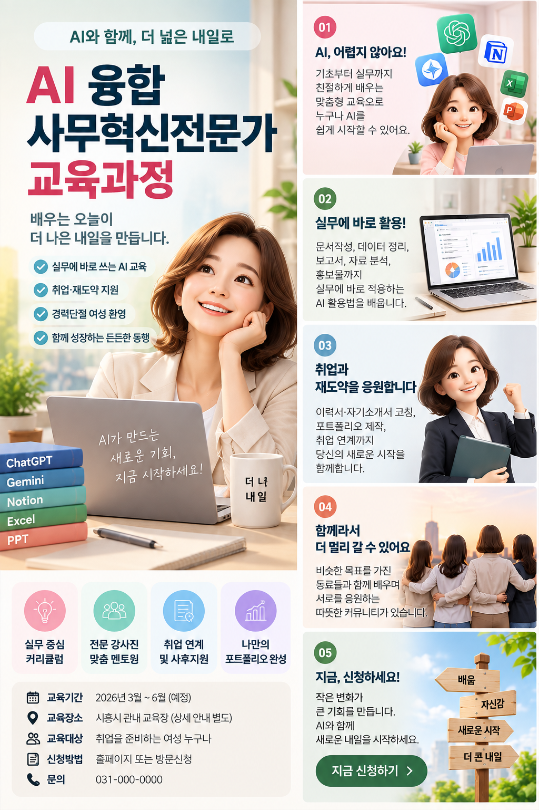
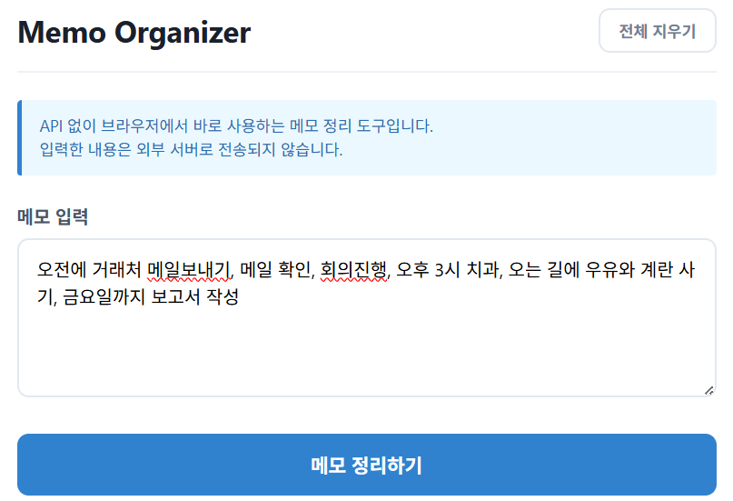
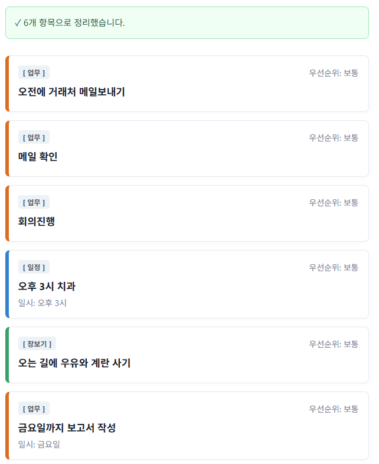

01
경영지원 · 세무/회계 | 20년+
세무·회계사무실 실무경력 17년 포함
원천징수, 부가가치세, 법인세(법인조정 포함), 종합소득세(조정 포함) 등 각종 세무·회계 신고 및 결산 업무를 수행했습니다. 세무·회계 실무를 기반으로 기업의 회계·인사·총무 등 경영지원 업무까지 폭넓게 경험하며 안정적인 업무 운영과 정확한 실무 처리 역량을 쌓았습니다.
안녕하세요 👋
지금까지 쌓아온 경험에 디지털 기술과 새로운 역량을 더하며 성장하고 있습니다.
안녕하세요. 경험과 새로운 배움을 함께 쌓아가고 있는 조현옥입니다.
기존 업무 경험에 AI와 디지털 기술을 더해 보다 효율적으로 일하는 방법을 배웠습니다.
이 포트폴리오는 제가 배우고 경험한 과정과 결과물을 기록하기 위해 만들었습니다.
이름 조현옥
관심 분야 AI · 사무자동화 · 업무효율화
강점 책임감 · 꼼꼼함 · 소통
목표 경험과 AI를 연결하는 실무형 인재
배우고 경험하며 만든 결과물을 소개합니다.
29년간 다양한 현장에서 쌓은 실무 경험을 바탕으로 회계·총무·인사부터 운영관리, 프로젝트 관리까지 핵심 역할을 수행하며 성과를 만들어 왔습니다.
ChatGPT와 다양한 생성형 AI 도구를 활용하여 업무를 분석하고, 반복 업무를 개선하며, 데이터 분석·문서 작성·콘텐츠 제작 등 다양한 실무 영역에 AI를 적용한 프로젝트입니다.
HTML/CSS 기반의 반응형 웹 구조를 직접 구현하여 본인의 역량과 성과를 한눈에 볼 수 있는 인터랙티브 디지털 포트폴리오를 구축했습니다.
생성형 AI를 활용하여 아이디어 기획부터 가사·음악·영상 제작까지 뮤직비디오, 숏폼 영상, 편집 콘텐츠 등 다양한 멀티미디어 작품을 직접 기획·제작하고 있습니다.
PROJECT 01 · CAREER PROFILE
경영지원 20년+ | 프로젝트·인력관리 11년+ | 쇼핑몰 운영·CS 3년 | 금융 IT·영업 4년+
약 29년의 실무경력, 그중 20년 이상을 경영지원 분야에서 경험한 조현옥입니다.
대기업 근무를 시작으로 회계·세무·인사·총무 등 경영지원 업무를 중심으로 경력을 쌓아왔으며, 프로젝트 일정 및 인력관리, 온라인 쇼핑몰 운영·CS, 금융권 IT 개발자 관리와 영업까지 다양한 현장에서 실무 경험을 넓혀왔습니다.
오랜 경험에서 쌓은 책임감과 실무 판단력, 사람과 업무를 연결하는 조율 능력이 저의 강점입니다. 맡은 업무는 끝까지 책임지고, 익숙한 분야에서는 경험을 발휘하며 새로운 분야에서는 적극적으로 배우고 도전해 왔습니다.
현재는 이러한 경험에 AI와 디지털 활용 역량을 더해, 업무의 효율을 높이고 조직에 실질적인 가치를 만들어내는 AI 활용형 경영지원 인재로 성장하고 있습니다.
CAREER OVERVIEW
세무·회계사무실 실무경력 17년 포함
원천징수, 부가가치세, 법인세(법인조정 포함), 종합소득세(조정 포함) 등 각종 세무·회계 신고 및 결산 업무를 수행했습니다. 세무·회계 실무를 기반으로 기업의 회계·인사·총무 등 경영지원 업무까지 폭넓게 경험하며 안정적인 업무 운영과 정확한 실무 처리 역량을 쌓았습니다.
IT 프로젝트 일정·인력 및 협력사 관리
국책과제 및 다양한 IT 프로젝트에서 일정관리와 개발인력 관리, 협력사 관리를 담당했습니다. 해군전산소 유지보수 파견팀과 용산 합동참모본부 SI 프로젝트팀의 개발일정 및 개발인력 관리를 총괄했으며, 2013년 서울시 스마트버스 쉘터 구축 프로젝트에서는 협력사 관리 업무를 수행했습니다.
고객과 운영을 연결하는 실무형 쇼핑몰 관리
온라인 쇼핑몰의 운영·관리 및 고객 CS 업무를 담당했습니다. 고객 문의와 요청사항에 신속하게 대응하고, 운영 과정에서 발생하는 다양한 문제를 파악하고 해결하며 고객 커뮤니케이션과 문제해결, 운영관리 역량을 쌓았습니다.
금융 IT 인력 매칭부터 계약·투입·사후관리까지
증권사 등 금융권 IT 프로젝트의 개발인력 관리 및 영업을 담당하며 고객사의 요구사항에 적합한 개발인력을 연결하고 프로젝트가 원활하게 운영될 수 있도록 지원했습니다.
개발자와 고객사 사이에서 지속적으로 소통하며 인력 매칭, 고객사 대응, 계약 및 협상, 프로젝트 인력관리까지 전 과정을 관리했습니다.
PROJECT 01 · QUALIFICATIONS
PROJECT 01 · DIGITAL & AI SKILLS
회계·세무·경영지원 분야에서 쌓아온 실무 경험을 바탕으로 ERP와 OA 프로그램을 활용할 수 있으며, 생성형 AI와 바이브코딩을 업무에 접목하여 문서작성, 자료분석, 콘텐츠 제작 및 업무 효율화 역량을 넓혀왔습니다.
회계·세무·경영지원 업무 실무 활용
실무 활용회계자료 관리 및 세무신고 업무 활용
실무 활용문서작성·자료정리·분석·아이디어 도출·업무 효율화
업무 활용자료조사·문서작성·이미지 및 콘텐츠 제작 활용
AI 활용문서 분석·요약·자료정리·콘텐츠 작성 활용
AI 활용자료 기반 요약·분석·정보정리 및 학습 활용
AI 활용AI를 활용한 웹페이지·업무용 웹앱 기획 및 구현
AI 개발데이터 정리·보고서·제안서·업무문서 작성
실무 활용AI 음악·영상 콘텐츠 기획 및 제작
콘텐츠 제작PROJECT 02 · GENERATIVE AI WORKFLOW
생성형 AI를 활용해 실제·가상 프로젝트를 다양한 형태로 기획하고, 데이터 분석·경영지원·업무혁신·콘텐츠 제작 등 실무 활용 결과물로 구현한 프로젝트 모음입니다.
PROJECT 02 · DETAIL
생성형 AI를 활용해 기획·분석·업무혁신·콘텐츠 제작 등 다양한 형태로 구현한 프로젝트를 각각 분리하여 확인할 수 있습니다.
PROJECT 02 · GENERATIVE AI WORKFLOW
AI 교육을 통해 ChatGPT와 다양한 생성형 AI 도구를 활용하여 데이터 분석, 업무보고서 작성, 홍보 콘텐츠 제작 등 실제 업무에 적용 가능한 AI 활용 프로젝트를 기획하고 구현하는 과정을 정리했습니다.
생성형 AI를 단순 문서작성 도구가 아니라, 업무 데이터를 정리하고 핵심을 구조화하며 결과물을 만드는 실무 보조 도구로 활용하는 것을 목표로 했습니다.
가상 업무 주제 설정, 설문 문항 기획, 데이터 정리·분석, 핵심 지표 도출, 경영지원 보고 구조화, PPT 구성, 홍보 메시지 및 포스터 콘셉트 기획까지 전체 흐름을 설계했습니다.
01 · AI SURVEY & DATA ANALYSIS
직장인의 생성형 AI 업무 활용 현황을 가상 설문 데이터로 구성하고, Excel 기반 집계와 분석을 통해 업무 생산성 개선 방향을 도출했습니다.
AI 활용 자체는 확산되어 있지만, 정확성 검증·프롬프트 작성·보안 및 사용법과 같은 실무 적용 역량이 함께 필요합니다. 따라서 조직 차원의 표준 프롬프트, 검증 기준, 실무 중심 교육을 함께 설계하는 방향으로 연결했습니다.
02 · AI MANAGEMENT REPORT & PPT
설문 데이터를 AI 관점으로 분석하고, 경영진 의사결정에 필요한 핵심 내용만 보고자료로 구조화했습니다.
이메일·보고서·회의록·데이터 요약 등 반복 업무의 공통 프롬프트 템플릿 구축
사실 확인, 개인정보 입력 금지, 기밀정보 관리 등 최소 검토 기준 마련
직무별 실제 업무 예제로 ‘질문 작성 → 결과 검토 → 수정’ 과정 학습
03 · AI PROMOTIONAL CONTENT
교육과정의 핵심 메시지를 정리하고, 생성형 AI를 활용해 대상자가 내용을 빠르게 이해할 수 있는 홍보 포스터 형태로 시각화했습니다.

‘AI가 어렵다’는 진입장벽을 낮추고, 실무 활용·취업 연계·동료 학습이라는 교육과정의 장점을 한눈에 전달하도록 구성했습니다.
메인 메시지 → 과정 장점 → 교육 정보 → 신청 유도 순으로 정보 위계를 구성해 홍보물의 가독성을 높였습니다.
홍보 문구 정리, 콘텐츠 구조 설계, 이미지 콘셉트 및 비주얼 제작 과정에 생성형 AI를 활용했습니다.
PORTFOLIO POINT
본 프로젝트의 설문조사 주제, 50명 응답 데이터, 분석 결과, 경영지원 업무보고 내용, 교육과정 홍보 설정 및 연락처 등은 포트폴리오 제작과 생성형 AI 업무 활용 역량을 보여주기 위해 가상으로 구성한 예시입니다. 실제 기업·기관의 조사 결과나 공식 사업자료가 아닙니다.
PROJECT 02 · BUSINESS SUPPORT AI INNOVATION
회계·인사·총무 업무의 비효율 요소를 설문조사와 데이터 분석을 통해 파악하고, 생성형 AI 기반의 업무 생산성 개선방안을 도출하여 실제 업무에 활용할 수 있는 스마트 업무 매뉴얼로 구현했습니다.
자료 취합·검색, 반복 문서작성, 누락 확인처럼 시간이 많이 소요되는 업무를 진단하고, AI가 1차 정리와 초안을 지원하며 담당자가 최종 검토하는 실무형 개선 구조를 설계했습니다.
설문 결과를 단순 분석으로 끝내지 않고 회계·인사·총무별 개선안으로 연결한 뒤, 체크리스트와 프롬프트가 포함된 실제 사용형 업무 가이드로 구체화했습니다.
01 · SURVEY & DATA ANALYSIS
회계·인사·총무의 반복업무, 시간소요 업무, AI 적용 수요와 우려사항을 설문 데이터로 진단하고 Excel로 집계·분석했습니다.
회계는 월마감·세무신고자료, 인사는 근태취합·급여변동자료, 총무는 문서검색·비용정산에서 시간 부담이 크게 나타나는 구조로 정리했습니다.
02 · IMPROVEMENT REPORT
설문에서 확인한 문제를 바탕으로 자료 표준화 → AI 1차 처리 → 담당자 검토 → 체크리스트 → 보고·보관의 공통 개선 모델과 직무별 실행방안을 제안했습니다.
AI를 ‘자동 결정자’가 아니라 반복 정리와 초안을 담당하는 보조도구로 두고, 금액·세무·노무·개인정보·법정기한은 담당자가 반드시 검증하도록 설계했습니다.
03 · SMART WORK MANUAL
개선방안을 실제 업무에서 바로 활용할 수 있도록 회계 월마감, 인사 근태·급여, 총무 계약·문서관리의 절차·AI 보조 범위·완료기준·체크리스트·프롬프트를 표준화했습니다.
누락 확인, 변동 검토, 마감 체크, 경영진 보고 초안
근태 이상 후보, 급여 변동자 요약, 반복 문의 FAQ 초안
계약 핵심정보, 갱신 일정, 비용정산, 문서 검색·인계
PORTFOLIO POINT
본 프로젝트의 주제, 설문 응답 데이터, 분석 결과 및 업무 적용 사례는 생성형 AI를 활용한 경영지원 업무혁신 역량을 보여주기 위해 가상으로 구성한 포트폴리오용 예시입니다. 실제 기업·기관의 조사 결과나 공식 업무자료가 아닙니다.
PROJECT 03 · WEB & DIGITAL
업무 아이디어를 웹페이지와 업무용 웹앱으로 직접 기획하고 구현한 프로젝트입니다.
금융 IT 인력관리 실무 경험을 바탕으로 이력서 분석부터 검색·추천·제출자료 생성까지 하나의 흐름으로 설계한 프로젝트
영수증 이미지 분석 → 식재료 확인·수정 → 요리 3개 추천 → PDF·Word·한글용 저장까지 이어지는 실사용 흐름을 구현한 프로젝트
냉장고 사진 선택 → 식재료 분석 → 사용자 검토·수정 → 최종 재료 확정 → 요리 3개 추천까지 이어지는 실사용 흐름을 구현한 프로젝트
GAME COLLECTION
HTML · CSS · JavaScript와 바이브코딩을 활용해 만든 12개의 웹게임입니다. 별도의 설치 없이 브라우저에서 바로 실행할 수 있도록 구성했습니다.
PROJECT 03 · 01
흩어진 메모를 카테고리별로 정리하는 웹 기반 업무 보조 도구
여러 내용이 섞여 있는 메모를 다시 하나씩 확인하고 정리해야 하는 불편함을 줄이고, 해야 할 일을 빠르게 파악할 수 있도록 기획했습니다.
WORKFLOW
해야 할 일, 일정, 장보기 등 여러 메모를 자유롭게 입력합니다.

입력된 문장을 분석해 카테고리와 중요도를 자동으로 분류합니다.
분류된 메모를 카드 형태로 한눈에 확인할 수 있습니다.

PROJECT 03 · 02
개발자 이력서 분석 및 인력 매칭 업무 보조 도구
금융 IT 개발자 인력 관리 및 소싱 업무 경험을 바탕으로, 이력서 확인부터 개발자 검색·추천·제출자료 생성까지 반복되는 업무를 하나의 흐름으로 정리한 웹 기반 업무 보조 도구입니다.
※ 첨부해 주신 DEV MATCH AI 상세 자료를 포트폴리오 안에서 그대로 확인할 수 있도록 구성했습니다. 화면의 인명·연락처·프로젝트 정보는 샘플 데이터입니다.
PROJECT 03 · 03
마트 영수증 이미지 분석을 활용한 식재료 정리 및 요리 추천 웹 애플리케이션
마트 영수증 사진을 분석해 식재료를 추출하고, 사용자가 직접 확인·수정한 재료를 바탕으로 초보자도 쉽게 만들 수 있는 요리 3개를 추천하는 웹 애플리케이션입니다.
※ 첨부해 주신 영수증 AI 통합본의 프로젝트 소개, 작동 순서, 주요 화면, 구현 포인트와 API 없이 체험하는 기능까지 한 화면에서 확인할 수 있도록 그대로 연결했습니다.
PROJECT 03 · 04
냉장고 사진을 바탕으로 식재료를 확인하고, 사용자가 검토한 재료로 요리를 추천하는 웹 기반 생활 보조 도구
냉장고 사진을 바탕으로 식재료를 확인하고, 사용자가 직접 결과를 검토·수정한 뒤 활용 가능한 요리를 추천받는 웹 기반 생활 보조 도구입니다. 포트폴리오에서는 API 키 없이도 전체 사용 흐름을 체험할 수 있도록 데모 모드를 함께 구성했습니다.
※ 첨부해 주신 통합 HTML의 프로젝트 소개, 순서도, 주요 화면 캡처, 실제 API 연결 화면과 API 없이 체험하는 데모 기능까지 그대로 확인할 수 있도록 구성했습니다.
PROJECT 03 · GAME COLLECTION
직접 기획·구현한 12개의 브라우저 기반 게임을 한곳에서 플레이할 수 있도록 구성했습니다.
실제 전투기 느낌의 슈팅 게임
과일을 잡으며 라이프와 보스전을 즐기는 액션 게임
빠르게 나타나는 두더지를 잡는 반응속도 게임
고등 필수·수능 영단어를 게임으로 학습
같은 색의 액체를 분류하는 퍼즐 게임
흑백 돌을 뒤집어 승부하는 전략 보드게임
컴퓨터와 겨루는 오목 게임
장애물을 피하며 달리는 러너 게임
초등 영어 단어를 재미있게 익히는 학습 게임
피자를 활용해 분수를 배우는 수학 게임
브라우저에서 즐기는 빠른 핑퐁 게임
주문을 처리하며 가게를 운영하는 타이쿤 게임
PROJECT 04
보고 싶은 작품을 선택하세요. 각 작품은 한 화면에 하나씩 열립니다.
PROJECT 04 · 01
친숙한 제품을 생성형 AI로 재해석해 캐릭터 모핑과 3D 애니메이션 연출을 구현한 첫 AI 영상 실습 프로젝트입니다.
일상 속 친숙한 제품(바나나맛 우유)을 소재로 생성형 AI 기술을 활용해 위트 있는 캐릭터 모핑 및 3D 애니메이션 연출 구현
실사 제품 기반 프롬프트 엔지니어링 및 캐릭터 콘셉트 디자인
뚜껑 개봉, 연기 이펙트, 우유병 소멸 및 캐릭터 등장
GEMINI AI (이미지/비디오 생성)
PROJECT 04 · 02
생성형 AI를 활용해 음악, 이미지, 영상, 편집을 하나의 이야기로 연결한 맞춤형 뮤직비디오 프로젝트입니다.
새로운 도전을 시작하는 동료 교육생들의 성장과 희망을 주제로, 배움의 여정과 서로를 향한 응원의 메시지를 담은 맞춤형 뮤직비디오
전반적인 기획, 작사, AI 툴 기반 음원 작곡 및 이미지·영상 생성, 비디오 컷 편집 및 자막 디자인
SUNO(음악 작곡 툴), GEMINI(이미지/영상 생성), CAPCUT(영상 편집 툴)
실사 인물 사진을 애니메이션 스타일로 캐릭터화하여 일관된 내러티브로 연결하고, 음악과 시각 연출을 결합한 멀티모달 콘텐츠 제작 역량을 구현했습니다.
PROJECT 04 · 03
생성형 AI를 활용해 가족의 이야기를 음악과 영상으로 표현한 맞춤형 뮤직비디오 프로젝트입니다.
평생 가족을 위해 헌신해 온 어머니의 삶을 돌아보고, 앞으로 펼쳐질 어머니만의 행복한 시간을 응원하는 딸의 마음을 담은 맞춤형 뮤직비디오
전반적인 기획, 작사, AI 툴 기반 음원 작곡 및 이미지·영상 생성, 비디오 컷 편집 및 자막 디자인
SUNO(음악 작곡 툴), GEMINI(이미지/영상 생성), CAPCUT(영상 편집 툴)
PROJECT 04 · 04
나를 위한 나만의 노래에 지나온 시간과 새로운 시작, 앞으로 한 걸음 더 전진하겠다는 의지와 포부를 담은 음악·영상 프로젝트입니다.
나를 위해 만든 나만의 노래로, 지나온 시간을 돌아보고 새로운 도전을 시작하며 앞으로 한 걸음 더 전진하겠다는 의지와 포부를 담은 음악·영상 프로젝트
전반적인 기획, 작사, AI 툴 기반 음원 작곡 및 이미지·영상 생성, 비디오 컷 편집 및 자막 디자인
VREW(나레이션, 자막), SONO(음악 작곡 툴), GEMINI(이미지/영상 생성), CAPCUT(영상 편집 툴)
PROJECT 04 · 05
생성형 음악 AI를 활용해 개인의 감정과 이야기를 다양한 장르의 완곡으로 구현한 음악 제작 프로젝트입니다.
듣고 싶은 곡의 음악듣기 버튼을 눌러주세요.
일상의 감정, 자아 성찰, 친구들과의 추억, 사랑의 서사 등을 가사로 구조화하고, 생성형 음악 AI(Suno)를 통해 다채로운 장르(어쿠스틱 팝, 시티팝, 발라드 등)의 완곡으로 구현
전곡 콘셉트 기획 및 작사, 음악 스타일 프롬프트
Suno AI (작곡 생성)
CONTACT ME
업무 또는 포트폴리오와 관련하여 궁금한 점이 있다면 편하게 연락해주세요.